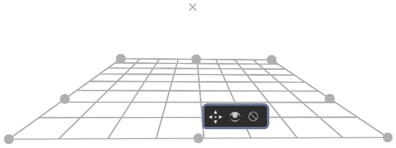

使用輔助尺來繪畫¶
The assistant system allows you to have a little help while drawing straight lines or circles.
They can function as a preview shape, or you can snap onto them with the freehand brush tool. In the tool options of free hand brush, you can toggle Snap to Assistants to turn on snapping.

Krita's vanishing point assistants in action.¶
The following assistants are available in Krita:
類型¶
There are several types in Krita. You can select a type of assistant via the tool options docker.
橢圓¶
An assistant for drawing ellipses and circles.
This assistant consists of three points: the first two are the axis of the ellipse, and the last one is to determine its width.
- 同心橢圓
The same an ellipse, but allows for making ellipses that are concentric to each other.
If you press the Shift key while holding the first two handles, they will snap to perfectly horizontal or vertical lines. Press the Shift key while holding the third handle, and it'll snap to a perfect circle.
透視¶
This ruler allows you to draw and manipulate grids on the canvas that can serve as perspective guides for your painting. A grid can be added to your canvas by first clicking the tool in the toolbar and then clicking four points on the canvas which will serve as the four corners of your grid.
This grid can be used with the 'perspective' sensor, which can influence brushes.
The grid can be manipulated by pulling on any of its four corners. The grid can be extended by clicking and dragging a midpoint of one of its edges. This will allow you to expand the grid at other angles. This process can be repeated on any subsequent grid or grid section.
If you press the Shift key while holding any of the corner handles, they'll snap to one of the other corner handles, in sets. You can delete any grid by clicking on the cancel button at its center. This tool can be used to build reference for complex scenes.
直線¶
There are three assistants in this group:
- 直線
Helps create a straight line between two points.
- 無限直線
Extrapolates a straight line beyond the two visible points on the canvas.
- 平行線
This ruler allows you to draw a line parallel to the line between the two points anywhere on the canvas.
If you press the Shift key while holding the first two handles, they will snap to perfectly horizontal or vertical lines.
樣條曲線（雲形線、Spline）¶
This assistant allows you to position and adjust four points to create a cubic bézier curve. You can then draw along the curve, snapping your brush stroke directly to the curve line. Perfect curves every time!
If you press the Shift key while holding the first two handles, they will snap to perfectly horizontal or vertical lines. Press the Shift key while holding the third or fourth handle, they will snap relative to the handle they are attached to.
消失點¶
This assistant allows you to create a vanishing point, typically used for a horizon line. A preview line is drawn and all your snapped lines are drawn to this line.
It is one point, with four helper points to align it to previously created perspective lines.
They are made and manipulated with the 輔助尺工具.
If you press the Shift key while holding the center handle, they will snap to perfectly horizontal or vertical lines depending on the position of where it previously was.
在 4.1 版本變更: The vanishing point assistant also shows several general lines.
When you've just created, or when you've just moved a vanishing point assistant, it will be selected. This means you can modify the amount of lines shown in the tool options of the 輔助尺工具.
魚眼透視¶
Like the vanishing point assistant, this assistant is per a set of parallel lines in a 3d space. So to use it effectively, use two, where the second is at a 90 degrees angle of the first, and add a vanishing point to the center of both. Or combine one with a parallel ruler and a vanishing point, or even one with two vanishing points. The possibilities are quite large.
This assistant will not just give feedback/snapping between the vanishing points, but also give feedback to the relative left and right of the assistant. This is so you can use it in edge-cases like panoramas with relative ease.
If you press the Shift key while holding the first two handles, they will snap to perfectly horizontal or vertical lines. Press the Shift key while holding the third handle, and it'll snap to a perfect circle.
兩點透視¶
在 5.0 版本新加入.
This assistant simplifies the setup of a two point perspective by putting the two vanishing points and the parallel vertical ruler into one single assistant. This allows it to draw a grid of squares. It requires 3 points at minimum: 2 for perspective, and the final for the mid-point of the vanishing points, which controls how the grid is drawn.
- Density
An extra option in the tool options, this controls how dense the grid is.
- Enable Vertical Ruler
This allows you to disable the vertical ruler, so that the assistant is only two vanishing points and a grid.
In the above image, a two point perspective with an area limiter is enough to draw an indoor area. The assistant is colored blue here.¶
教學¶
Check out this in depth discussion and tutorial on https://www.youtube.com/watch?v=OhEv2pw3EuI
設定 Krita 以製作類似工程圖紙的視覺¶
So now that you've seen the wide range of drawing assistants that Krita offers, here is an example of how using these assistants you can set up Krita for technical drawing.
This tutorial below should give you an idea of how to set up the assistants for specific types of technical views.
If you want to instead do the true projection, check out the projection category.
平行投影¶
Orthographic is a mode where you try to look at something from the left or the front. Typically, you try to keep everything in exact scale with each other, unlike perspective deformation.
The key assistant you want to use here is the Parallel Ruler. You can set these up horizontally or vertically, so you always have access to a Grid.
立體正投影¶
All of these are set up using three Parallel Rulers.

- 斜投影
For oblique, set two parallel rulers to horizontal and vertical, and one to an angle, representing depth.

- 二等角投影、等角投影
Isometric perspective has technically all three rulers set up at 120° from each other. Except when it's game isometric, then it's a type of dimetric projection where the diagonal values are a 116.565° from the main. The latter can be easily set up by snapping the assistants to a grid.

- 不等角投影
Is when all the angles are slightly different. Often looks like a slightly angled isometric.
直線透視¶

- 單點透視
A 1 point perspective is set up using 1 vanishing point, and two crossing perpendicular parallel rulers.

- 兩點透視
A 2 point perspective is set up using 2 vanishing point and 1 vertical parallel ruler. Often, putting the vanishing points outside the frame a little can decrease the strength of it. You can also use a 兩點透視 Ruler to set this one up very quickly.


- 三點透視
A 3 point perspective is set up using 3 vanishing point rulers.
透視消失點的邏輯¶
There's a little secret that perspective tutorials don't always tell you, and that's that a vanishing point is the point where any two parallel lines meet. This means that a 1 point perspective and 2 point perspective are virtually the same.
We can prove this via a little experiment. That good old problem: drawing a rail-road.

You are probably familiar with the problem: How to determine where the next beam is going to be, as perspective projection will make them look closer together.
Typically, the solution is to draw a line in the middle and then draw lines diagonally across. After all, those lines are parallel, meaning that the exact same distance is used.

But because they are parallel, we can use a vanishing point assistant instead, and we use the alignment handles to align it to the diagonal of the beam, and to the horizontal (here marked with red).
That diagonal can then in turn be used to determine the position of the beams:

Because any given set of lines has a vanishing point (outside the ones flat on the view-plane), there can be an infinite amount of vanishing points in a linear perspective. Therefore, Krita allows you to set vanishing points yourself instead of forcing you to only use a few.
魚眼透視¶
Fish eye perspective works much the same as the linear perspective, the big difference being that in a fish-eye perspective, any parallel set of lines has two vanishing points, each for one side.
So, to set them up, the easiest way is one horizontal, one vertical, on the same spot, and one vanishing point assistant in the middle.

But, you can also make one horizontal one that is just as big as the other horizontal one, and put it halfway: